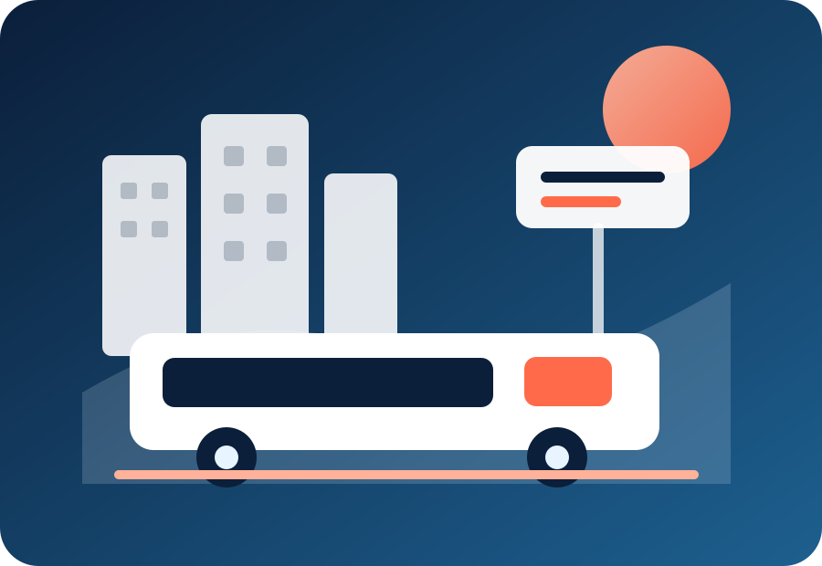
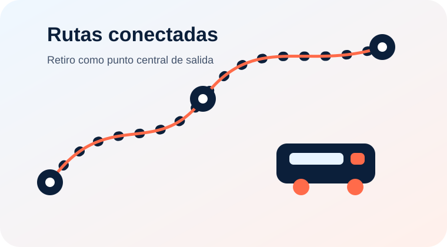

Tu viaje,
nuestra prioridad
RetiroConecta centraliza recorridos, horarios, paradas y servicios para mejorar la experiencia de quienes viajan desde la Terminal de Retiro hacia distintos destinos de la Provincia de Buenos Aires.

Buscá tu próximo destino
Simulá tu viaje desde Retiro
Elegí destino, día y horario. El sistema informa transporte recomendado, plataforma o sector de salida, duración, costo estimado, llegada aproximada y estado del servicio con datos simulados.

Un sistema visual para entender el viaje antes de salir
Las ilustraciones refuerzan la identidad del sitio sin sobrecargarlo: acompañan la información principal y ayudan a reconocer rutas, servicios y puntos de conexión.
Proyectos por ruta
Accedé directamente a la propuesta desarrollada para cada recorrido del sistema RetiroConecta.
Todo lo que necesitás para viajar
Una plataforma pensada para consultar información de manera rápida, accesible y organizada antes de iniciar tu recorrido.
Información útil
Accedé a las secciones de ayuda, accesibilidad y condiciones generales de la plataforma.
Información confiable
Datos organizados para planificar cada viaje.
Diseño responsive
Acceso claro desde celular, tablet o computadora.
Accesibilidad
Tipografía legible, contraste y navegación simple.
Conexión urbana
Integración entre Retiro y destinos clave.